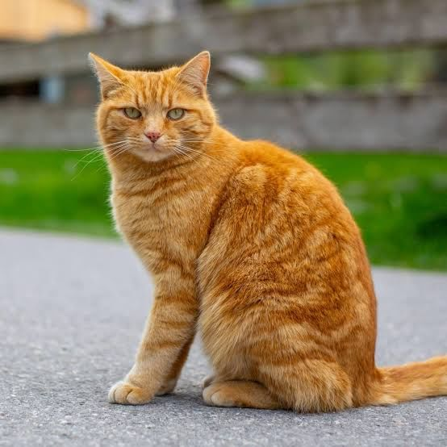
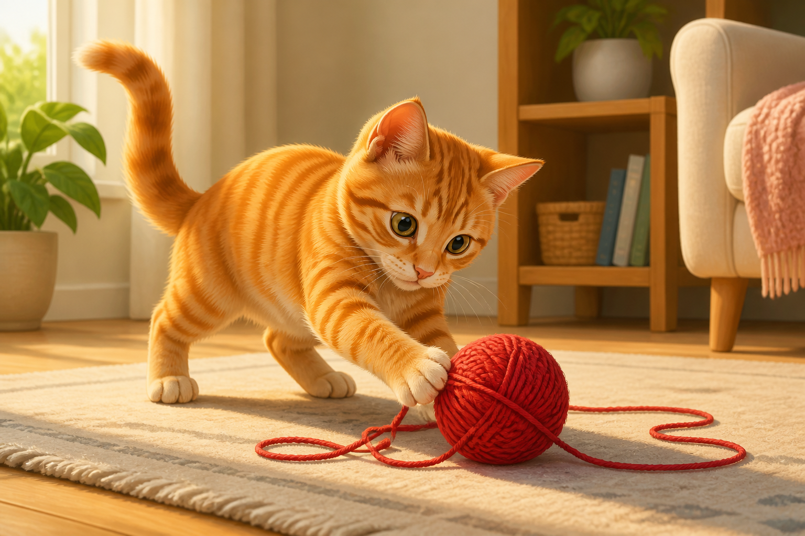

Great Night Vision
Cats can see well in dim light because their eyes are built to gather more light than human eyes. That helps them hunt during dawn and dusk.
Cats are intelligent, curious mammals with sharp senses, flexible bodies, and strong hunting instincts. This page introduces some of the biology, behavior, and care facts that make them such interesting pets.

Cats can see well in dim light because their eyes are built to gather more light than human eyes. That helps them hunt during dawn and dusk.
Whiskers help cats sense nearby objects and judge tight spaces. They are touch sensors, so they should never be cut or pulled.
Cats use their tail, flexible spine, and quick reflexes to balance when climbing, jumping, and landing.


The Nebelung is a long-haired blue-gray cat breed related to the Russian Blue. Nebelungs are known for green eyes, soft silver-tipped fur, and calm personalities. Learn more about Nebelung cats.